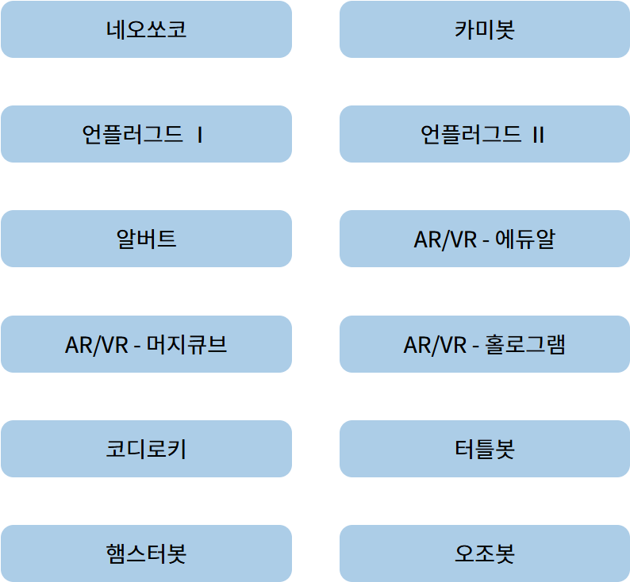
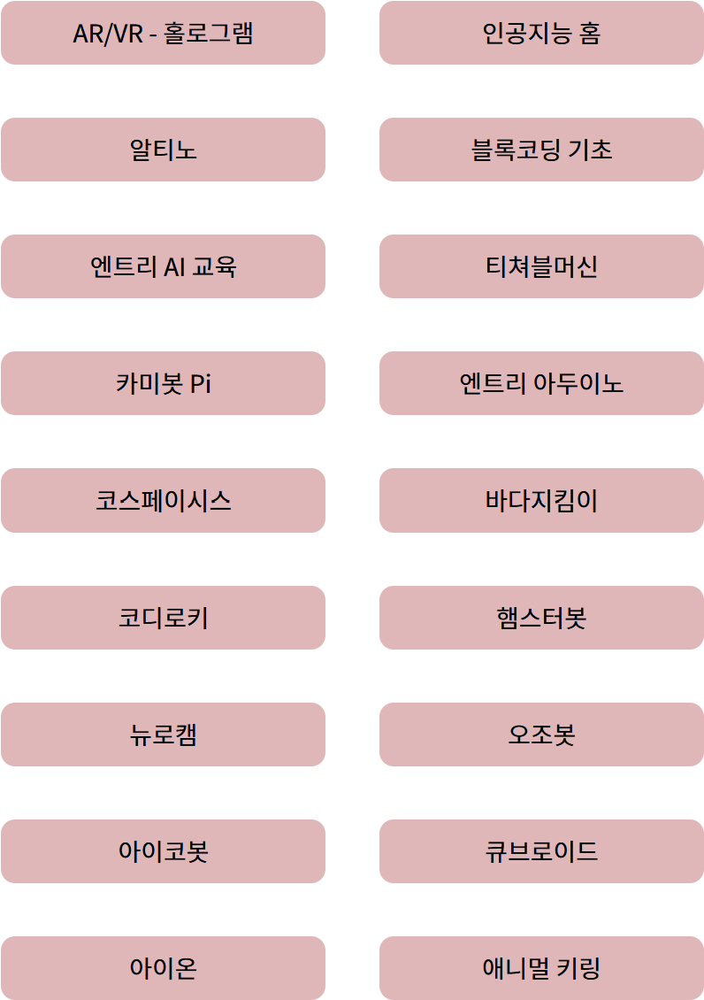
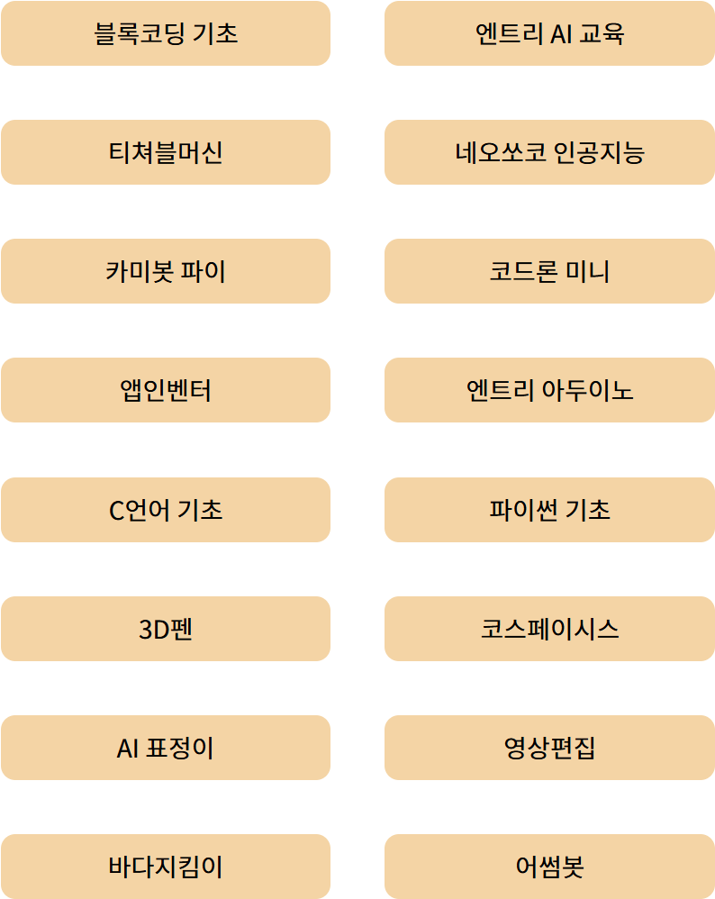

학교 교육
생성형 AI의 원리와 윤리, 프롬프트 작성, 기사·이미지·영상 제작을 프로젝트로 경험합니다.
- 초·중·고 수준별 구성
- 진로·창체·동아리 연계
- 개인 또는 팀 프로젝트
대상과 환경에 맞춘 실습 중심의 교육 프로그램을 제안합니다.
생성형 AI의 원리와 윤리, 프롬프트 작성, 기사·이미지·영상 제작을 프로젝트로 경험합니다.
스마트폰에서 바로 활용할 수 있는 생활형 AI부터 사진과 글을 활용한 디지털 창작까지 천천히 배웁니다.
이야기와 그림, 간단한 코딩 활동을 통해 AI를 창의적으로 사용하고 올바르게 질문하는 법을 익힙니다.
학습자의 연령과 수업 목표에 맞춰 로봇, 센서, 블록 코딩, AR·VR 교구를 선택합니다.


네오쏘코 · 카미봇 · 알버트 · 코디로키 · 터틀봇 · 햄스터봇 · 오조봇 · 알티노 · 뉴로캠 · 아이코봇
에듀알 · 머지큐브 · 홀로그램 · 코스페이시스 · AI 표정이 · 3D펜
엔트리 AI · 블록 코딩 기초 · 카미봇 Pi · 엔트리 아두이노 · 앱인벤터 · C언어 · 파이썬 · 영상 편집


